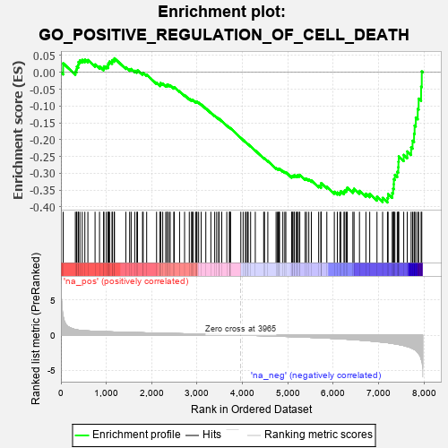
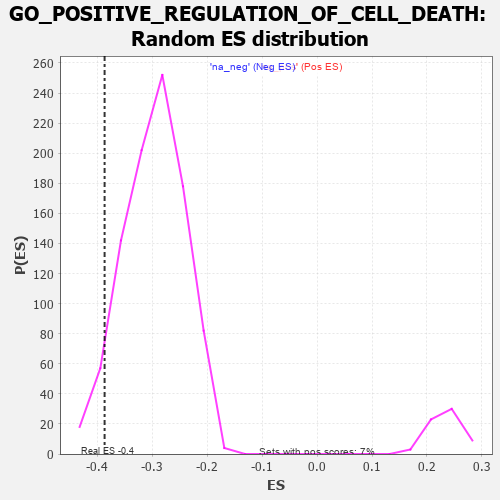

| | | Dataset | 7d |
| Phenotype | NoPhenotypeAvailable |
| Upregulated in class | na_neg |
| GeneSet | GO_POSITIVE_REGULATION_OF_CELL_DEATH |
| Enrichment Score (ES) | -0.38667712 |
| Normalized Enrichment Score (NES) | -1.3034141 |
| Nominal p-value | 0.055614974 |
| FDR q-value | 0.46901667 |
| FWER p-Value | 1.0 |
Table: GSEA Results Summary

Fig 1: Enrichment plot: GO_POSITIVE_REGULATION_OF_CELL_DEATH
Profile of the Running ES Score & Positions of GeneSet Members on the Rank Ordered List
| PROBE | GENE SYMBOL | GENE_TITLE | RANK IN GENE LIST | RANK METRIC SCORE | RUNNING ES | CORE ENRICHMENT | | 1 | TGFB3 | | | 49 | 2.654 | 0.0269 | No |
| 2 | KLF11 | | | 318 | 0.788 | 0.0026 | No |
| 3 | DAPK2 | | | 343 | 0.754 | 0.0089 | No |
| 4 | GSK3A | | | 351 | 0.745 | 0.0174 | No |
| 5 | AXIN2 | | | 383 | 0.713 | 0.0223 | No |
| 6 | BAX | | | 387 | 0.711 | 0.0308 | No |
| 7 | RAD9A | | | 418 | 0.681 | 0.0355 | No |
| 8 | LRP1 | | | 470 | 0.648 | 0.0371 | No |
| 9 | HTRA2 | | | 527 | 0.621 | 0.0377 | No |
| 10 | PITX3 | | | 594 | 0.596 | 0.0367 | No |
| 11 | ELK1 | | | 752 | 0.545 | 0.0235 | No |
| 12 | SAP18 | | | 850 | 0.519 | 0.0176 | No |
| 13 | PDCD4 | | | 941 | 0.497 | 0.0123 | No |
| 14 | PTPA | | | 947 | 0.497 | 0.0179 | No |
| 15 | DEDD2 | | | 999 | 0.484 | 0.0175 | No |
| 16 | ING3 | | | 1039 | 0.476 | 0.0184 | No |
| 17 | AKT1 | | | 1040 | 0.476 | 0.0244 | No |
| 18 | MEF2C | | | 1054 | 0.473 | 0.0286 | No |
| 19 | AIFM1 | | | 1072 | 0.469 | 0.0323 | No |
| 20 | SRC | | | 1128 | 0.459 | 0.0310 | No |
| 21 | NCK2 | | | 1131 | 0.458 | 0.0365 | No |
| 22 | ERCC3 | | | 1173 | 0.451 | 0.0369 | No |
| 23 | TFDP1 | | | 1180 | 0.450 | 0.0418 | No |
| 24 | RBM10 | | | 1430 | 0.404 | 0.0150 | No |
| 25 | INHBB | | | 1514 | 0.388 | 0.0093 | No |
| 26 | SOS1 | | | 1547 | 0.384 | 0.0100 | No |
| 27 | CDK4 | | | 1626 | 0.370 | 0.0047 | No |
| 28 | BACE1 | | | 1673 | 0.360 | 0.0033 | No |
| 29 | WWOX | | | 1688 | 0.359 | 0.0060 | No |
| 30 | FNIP1 | | | 1798 | 0.338 | -0.0037 | No |
| 31 | ABR | | | 1812 | 0.335 | -0.0012 | No |
| 32 | PAK3 | | | 1889 | 0.322 | -0.0068 | No |
| 33 | BMP7 | | | 2107 | 0.290 | -0.0309 | No |
| 34 | SYK | | | 2186 | 0.278 | -0.0374 | No |
| 35 | C1QBP | | | 2189 | 0.278 | -0.0342 | No |
| 36 | UTP11 | | | 2195 | 0.277 | -0.0314 | No |
| 37 | CREB1 | | | 2243 | 0.269 | -0.0340 | No |
| 38 | REST | | | 2308 | 0.259 | -0.0389 | No |
| 39 | ANO6 | | | 2339 | 0.255 | -0.0396 | No |
| 40 | FAF1 | | | 2340 | 0.255 | -0.0364 | No |
| 41 | PPID | | | 2376 | 0.249 | -0.0378 | No |
| 42 | OMA1 | | | 2408 | 0.244 | -0.0387 | No |
| 43 | ZC3H8 | | | 2486 | 0.229 | -0.0456 | No |
| 44 | MELK | | | 2499 | 0.227 | -0.0443 | No |
| 45 | VAV3 | | | 2614 | 0.210 | -0.0563 | No |
| 46 | SLIT2 | | | 2724 | 0.195 | -0.0677 | No |
| 47 | BECN1 | | | 2828 | 0.179 | -0.0786 | No |
| 48 | DAPK3 | | | 2880 | 0.169 | -0.0830 | No |
| 49 | PDCD5 | | | 2885 | 0.169 | -0.0814 | No |
| 50 | RBM5 | | | 2910 | 0.164 | -0.0825 | No |
| 51 | MTCH1 | | | 2966 | 0.155 | -0.0875 | No |
| 52 | RRP1B | | | 2986 | 0.152 | -0.0881 | No |
| 53 | UNC5C | | | 2997 | 0.150 | -0.0875 | No |
| 54 | PIAS4 | | | 3034 | 0.145 | -0.0903 | No |
| 55 | TIGAR | | | 3091 | 0.138 | -0.0957 | No |
| 56 | TRIO | | | 3192 | 0.123 | -0.1069 | No |
| 57 | SMAD3 | | | 3303 | 0.105 | -0.1197 | No |
| 58 | DDX3X | | | 3388 | 0.091 | -0.1293 | No |
| 59 | SARM1 | | | 3432 | 0.086 | -0.1337 | No |
| 60 | LDHA | | | 3479 | 0.080 | -0.1385 | No |
| 61 | CDK5 | | | 3480 | 0.080 | -0.1375 | No |
| 62 | PIN1 | | | 3543 | 0.069 | -0.1446 | No |
| 63 | FIS1 | | | 3654 | 0.051 | -0.1580 | No |
| 64 | NF1 | | | 3713 | 0.040 | -0.1649 | No |
| 65 | HSF1 | | | 3718 | 0.039 | -0.1649 | No |
| 66 | DAXX | | | 3722 | 0.038 | -0.1648 | No |
| 67 | CCAR1 | | | 3737 | 0.036 | -0.1662 | No |
| 68 | SOS2 | | | 3963 | 0.000 | -0.1949 | No |
| 69 | PARP1 | | | 4014 | -0.010 | -0.2012 | No |
| 70 | SFRP2 | | | 4065 | -0.018 | -0.2073 | No |
| 71 | DDX20 | | | 4083 | -0.021 | -0.2093 | No |
| 72 | MTOR | | | 4114 | -0.025 | -0.2128 | No |
| 73 | ABL1 | | | 4125 | -0.027 | -0.2137 | No |
| 74 | PDX1 | | | 4179 | -0.038 | -0.2200 | No |
| 75 | WNT11 | | | 4282 | -0.056 | -0.2323 | No |
| 76 | LRRK2 | | | 4467 | -0.087 | -0.2547 | No |
| 77 | HIP1 | | | 4485 | -0.092 | -0.2558 | No |
| 78 | APC | | | 4558 | -0.107 | -0.2636 | No |
| 79 | PDIA3 | | | 4740 | -0.147 | -0.2849 | No |
| 80 | PLCG1 | | | 4770 | -0.151 | -0.2867 | No |
| 81 | SRPK2 | | | 4790 | -0.155 | -0.2872 | No |
| 82 | MTCH2 | | | 4806 | -0.158 | -0.2871 | No |
| 83 | FBXW7 | | | 4816 | -0.161 | -0.2863 | No |
| 84 | CLU | | | 4889 | -0.174 | -0.2933 | No |
| 85 | CASP1 | | | 4932 | -0.185 | -0.2963 | No |
| 86 | PRKDC | | | 4955 | -0.189 | -0.2968 | No |
| 87 | ING4 | | | 5084 | -0.221 | -0.3103 | No |
| 88 | ITSN1 | | | 5094 | -0.222 | -0.3087 | No |
| 89 | MMP9 | | | 5108 | -0.227 | -0.3075 | No |
| 90 | UBE2Z | | | 5137 | -0.234 | -0.3082 | No |
| 91 | FLCN | | | 5140 | -0.235 | -0.3055 | No |
| 92 | HDAC6 | | | 5183 | -0.244 | -0.3078 | No |
| 93 | ATM | | | 5210 | -0.249 | -0.3080 | No |
| 94 | TOP2A | | | 5216 | -0.250 | -0.3055 | No |
| 95 | SSH1 | | | 5254 | -0.258 | -0.3070 | No |
| 96 | PTEN | | | 5262 | -0.261 | -0.3046 | No |
| 97 | GRIN1 | | | 5381 | -0.291 | -0.3161 | No |
| 98 | LATS1 | | | 5412 | -0.298 | -0.3162 | No |
| 99 | ACOX2 | | | 5461 | -0.310 | -0.3184 | No |
| 100 | VDR | | | 5517 | -0.325 | -0.3214 | No |
| 101 | CASP8 | | | 5678 | -0.369 | -0.3372 | No |
| 102 | CALCR | | | 5730 | -0.386 | -0.3389 | No |
| 103 | TIA1 | | | 5731 | -0.386 | -0.3341 | No |
| 104 | DAP | | | 5732 | -0.386 | -0.3292 | No |
| 105 | ATG7 | | | 5858 | -0.420 | -0.3399 | No |
| 106 | JMY | | | 6023 | -0.479 | -0.3549 | No |
| 107 | UBB | | | 6090 | -0.503 | -0.3570 | No |
| 108 | STK4 | | | 6145 | -0.518 | -0.3574 | No |
| 109 | EGR1 | | | 6165 | -0.527 | -0.3533 | No |
| 110 | CDC42 | | | 6236 | -0.548 | -0.3554 | No |
| 111 | TFAP4 | | | 6254 | -0.556 | -0.3506 | No |
| 112 | TRAF7 | | | 6290 | -0.571 | -0.3479 | No |
| 113 | IFT57 | | | 6307 | -0.579 | -0.3427 | No |
| 114 | MALT1 | | | 6432 | -0.634 | -0.3506 | No |
| 115 | FANK1 | | | 6458 | -0.642 | -0.3458 | No |
| 116 | ROBO1 | | | 6577 | -0.699 | -0.3521 | No |
| 117 | GSK3B | | | 6719 | -0.768 | -0.3605 | No |
| 118 | NET1 | | | 6803 | -0.816 | -0.3609 | No |
| 119 | DNM1L | | | 6963 | -0.913 | -0.3698 | No |
| 120 | STPG1 | | | 7087 | -0.986 | -0.3731 | No |
| 121 | TSPO | | | 7194 | -1.065 | -0.3733 | Yes |
| 122 | MFN2 | | | 7208 | -1.081 | -0.3615 | Yes |
| 123 | MSX2 | | | 7299 | -1.171 | -0.3583 | Yes |
| 124 | GRN | | | 7319 | -1.194 | -0.3458 | Yes |
| 125 | CYLD | | | 7333 | -1.206 | -0.3324 | Yes |
| 126 | NGEF | | | 7335 | -1.209 | -0.3174 | Yes |
| 127 | WDR35 | | | 7357 | -1.225 | -0.3048 | Yes |
| 128 | UBC | | | 7410 | -1.274 | -0.2955 | Yes |
| 129 | KMO | | | 7432 | -1.308 | -0.2818 | Yes |
| 130 | SPDEF | | | 7436 | -1.313 | -0.2657 | Yes |
| 131 | CASP2 | | | 7442 | -1.322 | -0.2498 | Yes |
| 132 | GRIK2 | | | 7552 | -1.471 | -0.2454 | Yes |
| 133 | PDCD6 | | | 7630 | -1.615 | -0.2350 | Yes |
| 134 | BOK | | | 7715 | -1.817 | -0.2230 | Yes |
| 135 | CASP3 | | | 7747 | -1.902 | -0.2032 | Yes |
| 136 | ST18 | | | 7780 | -2.007 | -0.1821 | Yes |
| 137 | GRIK5 | | | 7792 | -2.044 | -0.1580 | Yes |
| 138 | TRAF6 | | | 7818 | -2.157 | -0.1342 | Yes |
| 139 | TRAF2 | | | 7861 | -2.481 | -0.1085 | Yes |
| 140 | FYN | | | 7881 | -2.622 | -0.0781 | Yes |
| 141 | ARRB1 | | | 7935 | -3.377 | -0.0427 | Yes |
| 142 | DAPK1 | | | 7950 | -3.767 | 0.0027 | Yes |
Table: GSEA details [plain text format]

Fig 2: GO_POSITIVE_REGULATION_OF_CELL_DEATH: Random ES distribution
Gene set null distribution of ES for GO_POSITIVE_REGULATION_OF_CELL_DEATH